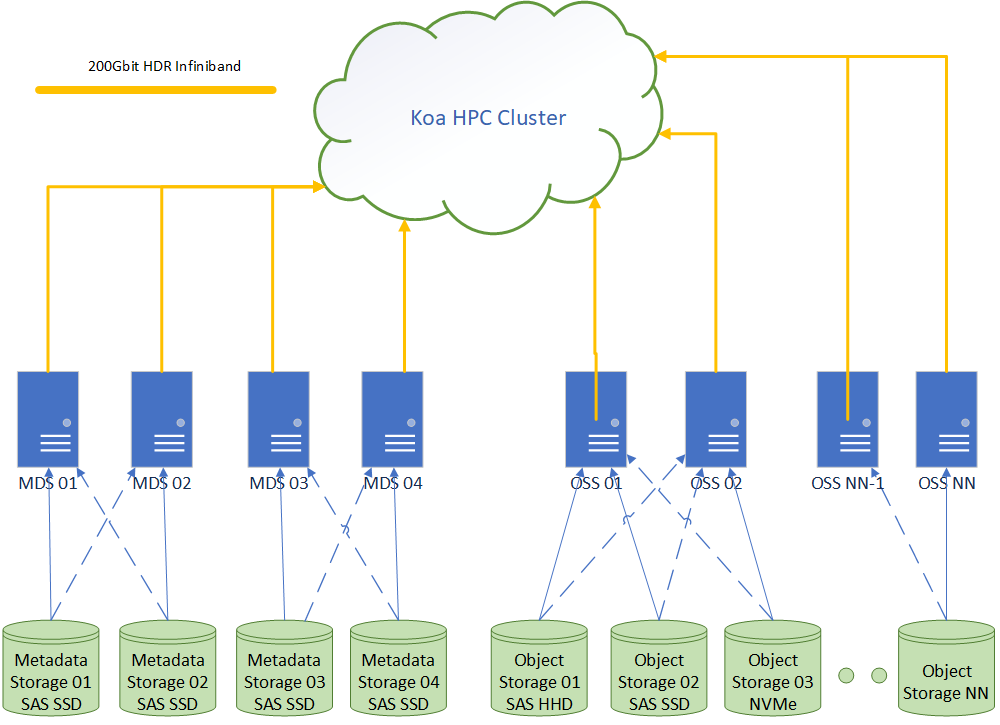

Scratch Storage (koa_scratch)
koa_scratch is Koa's high-speed, temporary storage area. It is the best place for temporary files created and used while your jobs are running.

Additional details about koa_scratch can be found in our online documentation.
⚠️ Important: Files are Deleted Automatically
Files on koa_scratch are automatically deleted 90 days after they were last modified (written to).
-
This is not for permanent storage.
-
Move important results to a permanent location (like your Home or Lab Storage) as soon as your job is finished.
How It Works
-
Best For: Active jobs that need to read and write data quickly. It is the highest-performance storage on Koa.
-
Storage Limits: There are no individual user quotas. The entire system is a shared space with a total capacity of 800 TiB and 400 million files.
-
Accessibility: You can access it from all nodes on the Koa cluster.
Key Features and Limitations
-
High Performance: koa_scratch provides the best performance for applications that need to read and write files during a job.
-
No User Quotas: There are no individual storage limits, but the entire system has a total limit of 800 TiB and 400 million files.
-
Temporary: Files are automatically deleted 90 days after they were last modified.
-
Accessibility: It's accessible from all user nodes on Koa.
✅ Tip for Best Performance
koa_scratch works best when reading and writing large files in a sequential manner.
If your job needs to read many small files, you can improve performance by bundling them into a single squashfs archive. This allows the system to read them more efficiently. Instructions can be found in the online documentation.